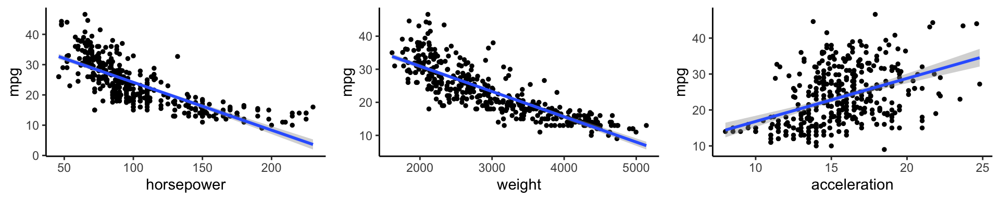
Trade-offs: Accuracy and interpretability, bias and variance
Dr. D’Agostino McGowan
Meet with the TA
- Book an appointment:
- email Linda Ding: dingj19@wfu.edu
- Availability: Monday 2-3p, Wednesday 4-5p
- Kirby B03
Regression and Classification
- Regression: quantitative response
- Classification: qualitative (categorical) response
Regression and Classification
What would be an example of a regression problem?
- Regression: quantitative response
- Classification: qualitative (categorical) response
Regression and Classification
What would be an example of a classification problem?
- Regression: quantitative response
- Classification: qualitative (categorical) response
Regression
Auto data
Above are mpg vs horsepower, weight, and acceleration, with a blue linear-regression line fit separately to each. Can we predict mpg using these three?
Maybe we can do better using a model:
\[\texttt{mpg} \approx f(\texttt{horsepower}, \texttt{weight}, \texttt{acceleration})\]
Notation
mpgis the response variable, the outcome variable, we refer to this as \(Y\)horsepoweris a feature, input, predictor, we refer to this as \(X_1\)weightis \(X_2\)accelerationis \(X_3\)- Our input vector is:
- \(X = \begin{bmatrix} X_1 \\X_2 \\X_3\end{bmatrix}\)
- Our model is
- \(Y = f(X) + \varepsilon\)
- \(\varepsilon\) is our error
Why do we care about \(f(X)\)?
- We can use \(f(X)\) to make predictions of \(Y\) for new values of \(X = x\)
- We can gain a better understanding of which components of \(X = (X_1, X_2, \dots, X_p)\) are important for explaining \(Y\)
- Depending on how complex \(f\) is, maybe we can understand how each component ( \(X_j\) ) of \(X\) affects \(Y\)
How do we choose \(f(X)\)?

What is a good value for \(f(X)\) at any selected value of \(X\), say \(X = 100\)? There can be many \(Y\) values at \(X = 100\).
How do we choose \(f(X)\)?
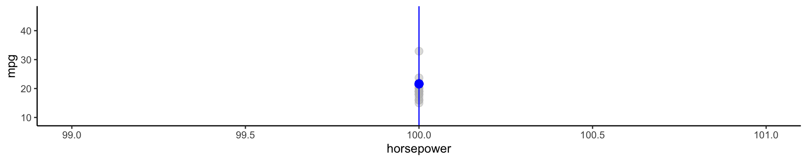What is a good value for \(f(X)\) at any selected value of \(X\), say \(X = 100\)? There can be many \(Y\) values at \(X = 100\).
How do we choose \(f(X)\)?
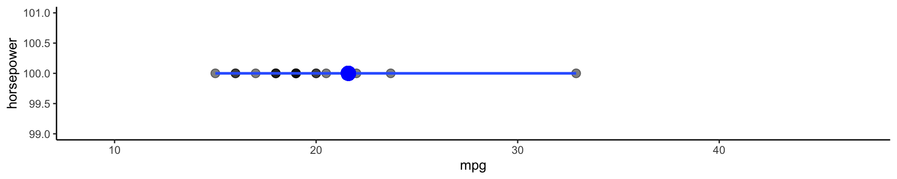What is a good value for \(f(X)\) at any selected value of \(X\), say \(X = 100\)? There can be many \(Y\) values at \(X = 100\).
- There are 17 points here, what value should I choose for f(100). What do you think the blue dot represents?
How do we choose \(f(X)\)?
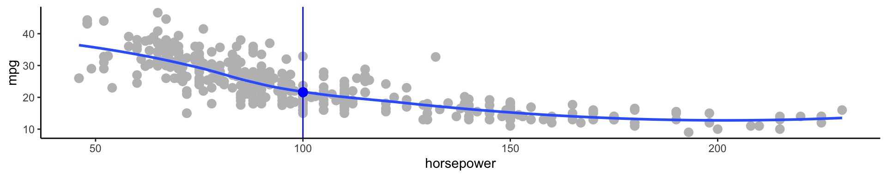A good value is
\[f(100) = E(Y|X = 100)\]
\(E(Y|X = 100)\) means expected value (average) of \(Y\) given \(X = 100\)
This ideal \(f(x) = E(Y | X = x)\) is called the regression function
Regression function, \(f(X)\)
- Also works or a vector, \(X\), for example,
\[f(x) = f(x_1, x_2, x_3) = E[Y | X_1 = x_1, X_2 = x_2, X_3 = x_3]\]
- This is the optimal predictor of \(Y\) in terms of mean-squared prediction error
Regression function, \(f(X)\)
\(f(x) = E(Y|X = x)\) is the function that minimizes \(E[(Y - g(X))^2 |X = x]\) over all functions \(g\) at all points \(X = x\)
- \(\varepsilon = Y - f(x)\) is the irreducible error
- even if we knew \(f(x)\), we would still make errors in prediction, since at each \(X = x\) there is typically a distribution of possible \(Y\) values
Regression function, \(f(X)\)
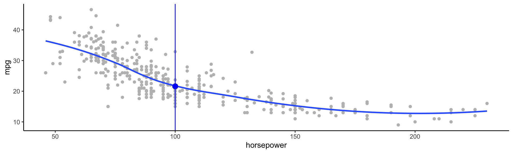Regression function, \(f(X)\)
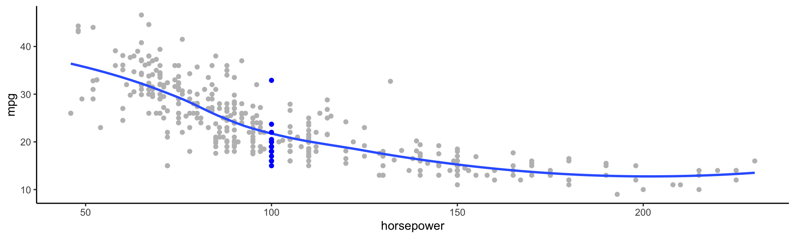Using these points, how would I calculate the regression function?
- Take the average! \(f(100) = E[\texttt{mpg}|\texttt{horsepower} = 100] = 19.6\)
Regression function, \(f(X)\)
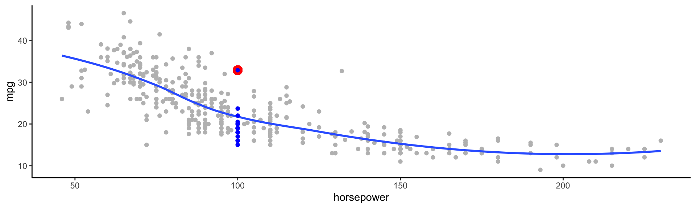This point has a \(Y\) value of 32.9. What is \(\hat\varepsilon\)?
- \(\hat\varepsilon = Y - \hat{f}(X) = 32.9 - 19.6 = \color{red}{13.3}\)
The error
For any estimate, \(\hat{f}(x)\), of \(f(x)\), we have
\[E[(Y - \hat{f}(x))^2 | X = x] = \underbrace{[f(x) - \hat{f}(x)]^2}_{\textrm{reducible error}} + \underbrace{Var(\varepsilon)}_{\textrm{irreducible error}}\]
- Assume for a moment that both \(\hat{f}\) and X are fixed.
- \(E(Y − \hat{Y})^2\) represents the average, or expected value, of the squared difference between the predicted and actual value of Y, and Var( \(\varepsilon\) ) represents the variance associated with the error term
- The focus of this class is on techniques for estimating f with the aim of minimizing the reducible error.
- the irreducible error will always provide an upper bound on the accuracy of our prediction for Y
- This bound is almost always unknown in practice
Estimating \(f\)
- Typically we have very few (if any!) data points at \(X=x\) exactly, so we cannot compute \(E[Y|X=x]\)
- For example, what if we were interested in estimating miles per gallon when horsepower was 104.
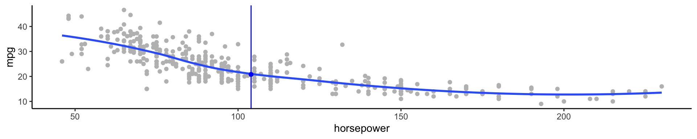
üí° We can relax the definition and let
\[\hat{f}(x) = E[Y | X\in \mathcal{N}(x)]\]
- Where \(\mathcal{N}(x)\) is some neighborhood of \(x\)
Notation pause!
\[\hat{f}(x) = \underbrace{E}_{\textrm{The expectation}}[\underbrace{Y}_{\textrm{of Y}} \underbrace{|}_{\textrm{given}} \underbrace{X\in \mathcal{N}(x)}_{\textrm{X is in the neighborhood of x}}]\]
üö® If you need a notation pause at any point during this class, please let me know!
Estimating \(f\)
üí° We can relax the definition and let
\[\hat{f}(x) = E[Y | X\in \mathcal{N}(x)]\]
- Nearest neighbor averaging does pretty well with small \(p\) ( \(p\leq 4\) ) and large \(n\)
- Nearest neighbor is not great when \(p\) is large because of the curse of dimensionality (because nearest neighbors tend to be far away in high dimensions)
What do I mean by \(p\)? What do I mean by \(n\)?
Parametric models
A common parametric model is a linear model
\[f(X) = \beta_0 + \beta_1X_1 + \beta_2X_2 + \dots + \beta_pX_p\]
- A linear model has \(p + 1\) parameters ( \(\beta_0,\dots,\beta_p\) )
- We estimate these parameters by fitting a model to training data
- Although this model is almost never correct it can often be a good interpretable approximation to the unknown true function, \(f(X)\)
Let’s look at a simulated example
- The red points are simulated values for
incomefrom the model:
\[\texttt{income} = f(\texttt{education, senority}) + \varepsilon\]
- \(f\) is the blue surface
Linear regression model fit to the simulated data
\[\hat{f}_L(\texttt{education, senority}) = \hat{\beta}_0 + \hat{\beta}_1\texttt{education}+\hat{\beta}_2\texttt{senority}\]
- More flexible regression model \(\hat{f}_S(\texttt{education, seniority})\) fit to the simulated data.
- Here we use a technique called a thin-plate spline to fit a flexible surface
And even MORE flexible üò± model \(\hat{f}(\texttt{education, seniority})\).
- Here we’ve basically drawn the surface to hit every point, minimizing the error, but completely overfitting
ü§π Finding balance
- Prediction accuracy versus interpretability
- Linear models are easy to interpret, thin-plate splines are not
- Good fit versus overfit or underfit
- How do we know when the fit is just right?
- Parsimony versus black-box
- We often prefer a simpler model involving fewer variables over a black-box predictor involving them all

Accuracy
- We’ve fit a model \(\hat{f}(x)\) to some training data \(\texttt{train} = \{x_i, y_i\}^N_1\)
- We can measure accuracy as the average squared prediction error over that
traindata
\[MSE_{\texttt{train}} = \textrm{Ave}_{i\in\texttt{train}}[y_i-\hat{f}(x_i)]^2\]
What can go wrong here?
- This may be biased towards overfit models
Accuracy
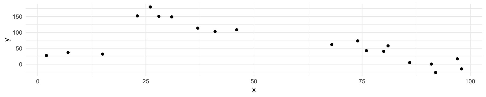I have some train data, plotted above. What \(\hat{f}(x)\) would minimize the \(MSE_{\texttt{train}}\)?
\[MSE_{\texttt{train}} = \textrm{Ave}_{i\in\texttt{train}}[y_i-\hat{f}(x_i)]^2\]
Accuracy

I have some train data, plotted above. What \(\hat{f}(x)\) would minimize the \(MSE_{\texttt{train}}\)?
\[MSE_{\texttt{train}} = \textrm{Ave}_{i\in\texttt{train}}[y_i-\hat{f}(x_i)]^2\]
Accuracy
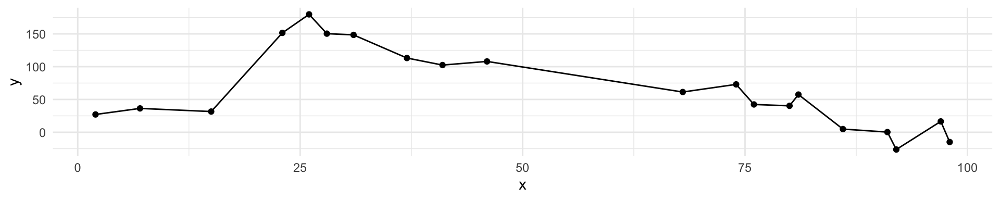What is wrong with this?
It’s overfit!
Accuracy
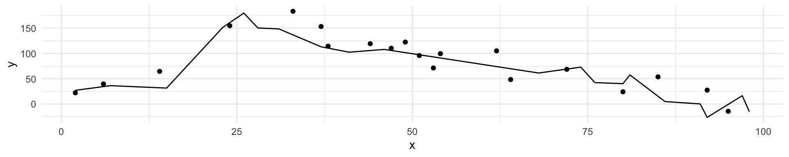If we get a new sample, that overfit model is probably going to be terrible!
Accuracy
- We’ve fit a model \(\hat{f}(x)\) to some training data \(\texttt{train} = \{x_i, y_i\}^N_1\)
- Instead of measuring accuracy as the average squared prediction error over that
traindata, we can compute it using freshtestdata \(\texttt{test} = \{x_i,y_i\}^M_1\)
\[MSE_{\texttt{test}} = \textrm{Ave}_{i\in\texttt{test}}[y_i-\hat{f}(x_i)]^2\]
Black curve is the “truth” on the left. Red curve on right is \(MSE_{\texttt{test}}\), grey curve is \(MSE_{\texttt{train}}\). Orange, blue and green curves/squares correspond to fis of different flexibility.
Here the truth is smoother, so the smoother fit and linear model do really well
Here the truth is wiggly and the noise is low, so the more flexible fits do the best
Bias-variance trade-off
- We’ve fit a model, \(\hat{f}(x)\), to some training data
- Let’s pull a test observation from this population ( \(x_0, y_0\) )
- The true model is \(Y = f(x) + \varepsilon\)
- \(f(x) = E[Y|X=x]\)
\[E(y_0 - \hat{f}(x_0))^2 = \textrm{Var}(\hat{f}(x_0)) + [\textrm{Bias}(\hat{f}(x_0))]^2 + \textrm{Var}(\varepsilon)\]
The expectation averages over the variability of \(y_0\) as well as the variability of the training data. \(\textrm{Bias}(\hat{f}(x_0)) =E[\hat{f}(x_0)]-f(x_0)\)
- As flexibility of \(\hat{f}\) \(\uparrow\), its variance \(\uparrow\) and its bias \(\downarrow\)
- choosing the flexibility based on average test error amounts to a bias-variance trade-off
Bias-variance trade-off
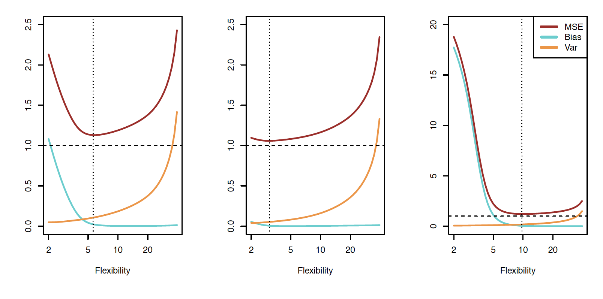Classification
Notation
- \(Y\) is the response variable. It is qualitative
- \(\mathcal{C}(X)\) is the classifier that assigns a class \(\mathcal{C}\) to some future unlabeled observation, \(X\)
- Examples:
- Email can be classified as \(\mathcal{C}=(\texttt{spam, not spam})\)
- Written number is one of \(\mathcal{C}=\{0, 1, 2, \dots, 9\}\)
Classification Problem
What is the goal?
- Build a classifier \(\mathcal{C}(X)\) that assigns a class label from \(\mathcal{C}\) to a future unlabeled observation \(X\)
- Assess the uncertainty in each classification
- Understand the roles of the different predictors among \(X = (X_1, X_2, \dots, X_p)\)
Suppose there are \(K\) elements in \(\mathcal{C}\), numbered \(1, 2, \dots, K\)
\[p_k(x) = P(Y = k|X=x), k = 1, 2, \dots, K\] These are conditional class probabilities at \(x\)
How do you think we could calculate this?
- In the plot, you could examine the mini-barplot at \(x = 5\)
Suppose there are \(K\) elements in \(\mathcal{C}\), numbered \(1, 2, \dots, K\)
\[p_k(x) = P(Y = k|X=x), k = 1, 2, \dots, K\] These are conditional class probabilities at \(x\)
- The Bayes optimal classifier at \(x\) is
\[\mathcal{C}(x) = j \textrm{ if } p_j(x) = \textrm{max}\{p_1(x), p_2(x), \dots, p_K(x)\}\]

What if this was our data and there were no points at exactly \(x = 5\)? Then how could we calculate this?
- Nearest neighbor like before!
- This does break down as the dimensions grow, but the impact of \(\mathcal{\hat{C}}(x)\) is less than on \(\hat{p}_k(x), k = 1,2,\dots,K\)
Accuracy
- Misclassification error rate
\[Err_{\texttt{test}} = \textrm{Ave}_{i\in\texttt{test}}I[y_i\neq \mathcal{\hat{C}}(x_i)]\]
- The Bayes Classifier using the true \(p_k(x)\) has the smallest error
- Some of the methods we will learn build structured models for \(\mathcal{C}(x)\) (support vector machines, for example)
- Some build structured models for \(p_k(x)\) (logistic regression, for example)
K-Nearest-Neighbors example
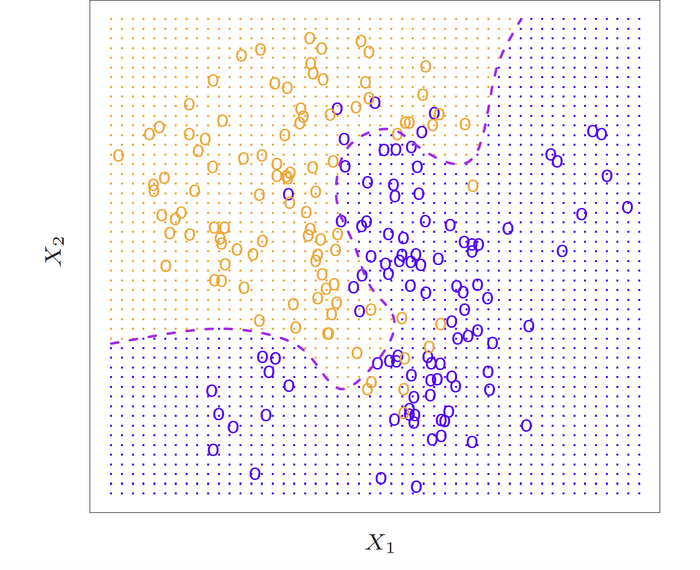
KNN (K = 10)

KNN


Dr. Lucy D’Agostino McGowan adapted from slides by Hastie & Tibshirani